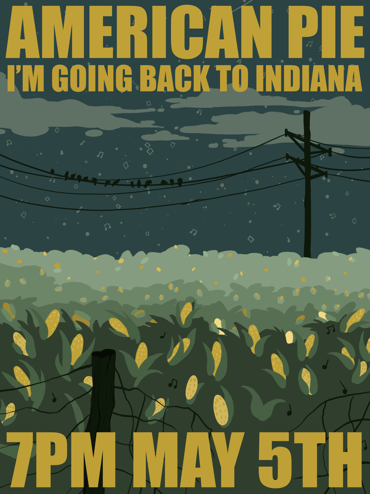
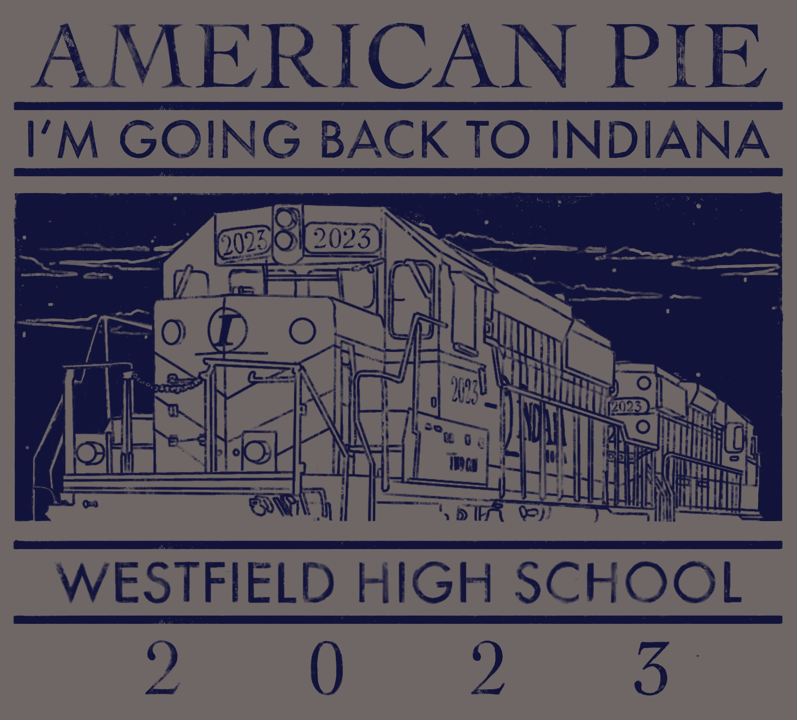
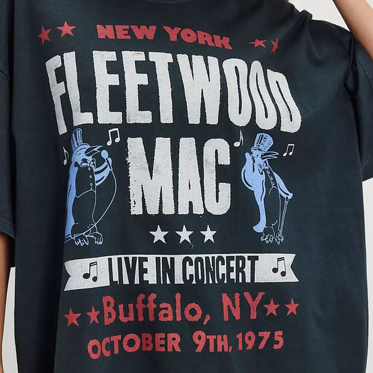
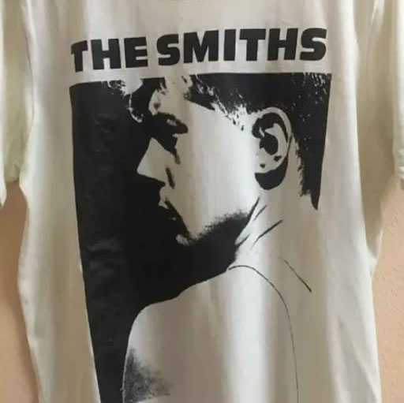
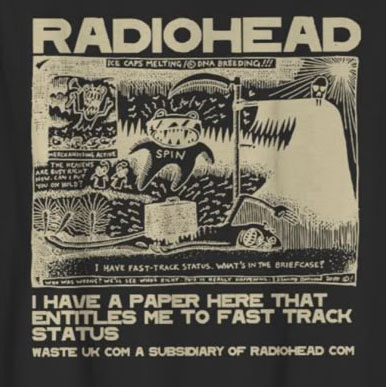
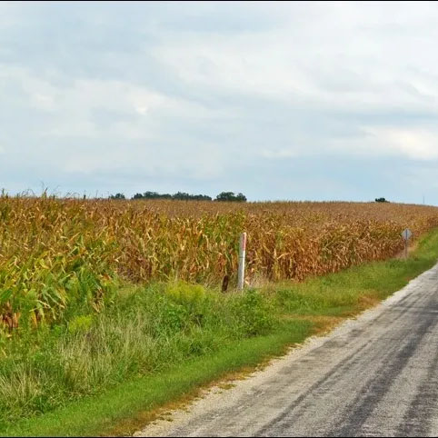

| Role | Graphic Designer |
|---|---|
| Client | Westfield High School |
| Project | American Pie Concert Identity |
| Deliverables | Poster Design, T-Shirt Graphics |
| Tools | Procreate, Adobe Illustrator |
| Timeline | 4 weeks |
| Constraints | Broad audience appeal, merchandise legibility, fundraising goals |
This project required balancing nostalgia with contemporary appeal. The design needed to resonate with students, parents, and donors while remaining visually bold enough to drive ticket sales and merchandise fundraising.
 
The challenge wasn’t a lack of visual material, but the opposite. Indiana imagery is familiar and often overlooked, so the design needed to reframe something ordinary into something memorable without losing its local authenticity.
Because the event is student-led and dependent on merchandise sales for funding, the design also needed to appeal broadly, not just to high schoolers but to parents, grandparents, siblings, and friends, while remaining cohesive across both posters and apparel.
  Rather than leaning into a generic rock aesthetic, I chose to ground the design in Hoosier visual language, using illustration as the primary storytelling device.
I took inspiration from a view outside my childhood home — a simple Indiana cornfield — and reframed it as a bold, graphic focal point. By elevating a familiar landscape instead of reinventing it, the design feels authentic while still visually striking.